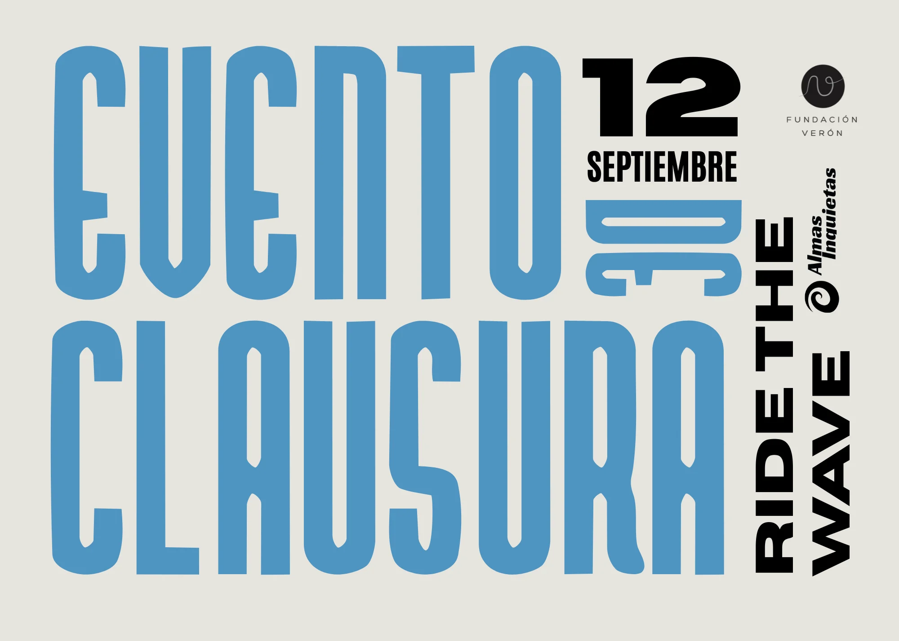
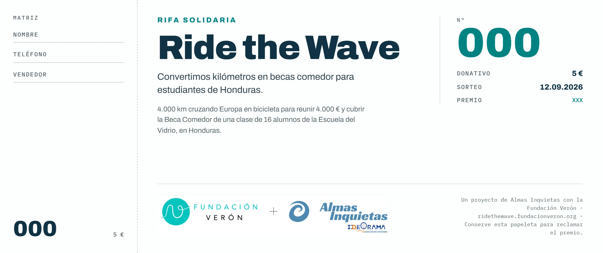

Ride the Wave
Carteles y piezas para un reto solidario de 4.000 km que recaudó más de 4.000 €.
Posters and pieces for a 4,000 km charity challenge that raised over €4,000.


- Sector
- Acción social · carteleríaSocial action · posters
- AñoYear
- 2026
- Mi rolMy role
- Diseño de la cartelería y del material de campaña, con Fundación Verón y Almas Inquietas.Design of the posters and campaign material, with Fundación Verón and Almas Inquietas.
- EntregablesDeliverables
- Cartel del evento de clausura en dos versiones, tarjeta del evento y papeleta de la rifa solidariaClosing-event poster in two versions, event card and charity raffle ticket
- HerramientasTools
- Illustrator · Canva · InDesign
01El retoThe challenge
Alejandro cruza Europa en bicicleta —de Praga a Madrid, 4.000 km en 70 días— para financiar la beca comedor de 16 niños en Honduras a través de la Fundación Verón. Una consultora inmobiliaria se suma como empresa colaboradora y necesitaba un lenguaje visual para contarlo y ayudar a mover la recaudación.Alejandro cycles across Europe —Prague to Madrid, 4,000 km in 70 days— to fund the school-meal scholarship of 16 children in Honduras through Fundación Verón. A real estate consultancy joined as a collaborating company and needed a visual language to tell the story and help drive donations.
02ProcesoProcess
- Una imagen propia para la causaAn identity of its own for the cause
Un look que conecta con el de Fundación Verón y Almas Inquietas.A look that connects with Fundación Verón and Almas Inquietas.
- Cartelería para cada momento del retoA poster for every moment of the challenge
Cartel del evento de clausura, tarjeta del evento, papeleta de la rifa y piezas para seguir el reto en redes.Closing-event poster, event card, raffle ticket and pieces to follow the challenge on social media.
- Del primer kilómetro al evento finalFrom the first kilometre to the final event
Todo el material listo para acompañar la causa de principio a fin, hasta el evento de clausura en Madrid.All the material ready to follow the cause from start to finish, up to the closing event in Madrid.
03SoluciónSolution
El cartel del evento de clausura en dos versiones, roja y azul, junto a la tarjeta del evento y la papeleta de la rifa solidaria.The closing-event poster in two versions, red and blue, alongside the event card and the charity raffle ticket.

